Common Roles
Common Roles
User Roles
Many companies will have common sets of users, including users who can view all data, users who may oversee the data load process, and other users who are not full administrators but are considered power users. Below, we will go through some common approaches to setting up these roles, knowing that specifics can be determined by each company’s needs. The following are just some common examples.
In addition to some common types of user roles, and equally as important, determining who and how many people will be responsible for administering your OneStream environment and application(s) is key. In this chapter, we will also touch upon some ways to deliver different admin levels.
Lastly, we will cover some common user names you may want to set up to handle task automation.
Common Roles › User Roles
View Users
First, let’s start with a common set of users: those who can view data that exists in a OneStream application. If you are a typical company, you will have a set of users upon whom you want to place no data restrictions, meaning this group of users should have the ability to view all cube data (cubes, scenarios, and entities).
You may have another set of users to whom you wish to grant view access, but with various restrictions as to which cube data, meaning they do not necessarily get to view all cubes, all scenarios, or all entities.
Both of these types of users can be accommodated. Let’s start by setting up a basic user group that can view all data. There is an out-of-the-box application security role, View All Data, that will allow us to achieve this with minimal other setup required.
This application security role negates the need for any specific cube, scenario, or entity data access.
By creating a security group (001_APP_VIEWALLDATA) and attaching this group to the application role object View All Data (as shown in Figure 4.1)…
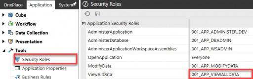
Figure 4.1
…we can then set up our user security group (000_GRP_VIEWALL) and place this
001_APP_VIEWALLDATA group in our security group.
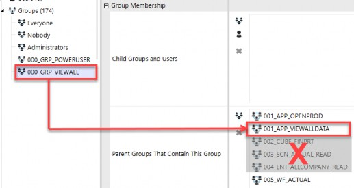
Figure 4.2
This out-of-the-box View All Data application security role negates the need for any 002 (cube), 003 (scenario), or 004 (entity)-specific data access as it inherently includes all cubes, all scenarios, and all entities within the application. Put another way, the View All Data application role supersedes the need for any other data-specific security.
So, this breaks our first rule of thumb from the prior chapter – that every 000 user security group should contain the first five elements. No sooner have we laid out basic rules in our naming convention than we break them! But this is a rare exception where an application security role (001) negates the need for specific data (002, 003, and 004) security groups.
As you can see in Figure 4.2, we embedded a workflow group (005) as well as an additional application security role group (001_APP_OPENPROD) as we still want to control which objects this user group can access. But, for the cube data security groups (002 to 004), this is a rare exception where the application security group (001_APP_VIEWALLDATA) supersedes them.
Now, let’s consider the second type of view users that most companies have. These are users who will have access to view data; however, not necessarily all data. The approach for these types of users will be slightly different and a little more complex, and will follow the general rule of thumb that their security group will need 001 to 005 access.
Let’s take the use case where you have a set of users that can view all Actual data but not any Budget or Forecast data. We start by setting up our user security group (000_GRP_VIEWALL_ACTUAL), but instead of utilizing the View All Data out-of-the-box application security role, which is too broad, we must embed specific data groups for 002 (cubes), 003 (Actual scenario), and 004 (entities) to achieve this, as shown in Figure 4.3:
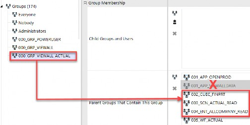
Figure 4.3
You can see that we have included only one scenario group (003_SCN_ACTUAL_READ) as we only want these view users to have access to Actual data. We, therefore, cannot utilize our previously created 001_APP_VIEWALLDATA security group because that group supersedes all data access and would give these individuals more access than is desired.
With regard to the entity security group (004_ENT_ALLCOMPANY_READ), there are two approaches that can be taken with this data group. You can either assign the 004_ENT_ALLCOMPANY_READ group to the Read Data Group 2 as shown in Figure 4.4…
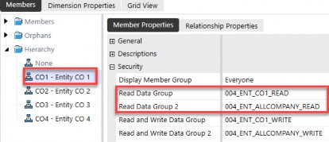
Figure 4.4
…or you can nest the 004_ENT_CO1_READ group into the Parent Groups That Contain This Group, as in Figure 4.5. Both will accomplish the same goal, that your users will obtain read data access to all entities.
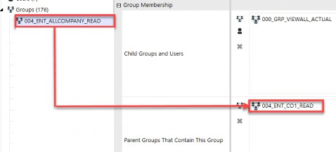
Figure 4.5
So, with view users, you have two common options: granting view access to all data or granting view access to specific subsets of data. The differences in setup can be seen in Figure 4.6.
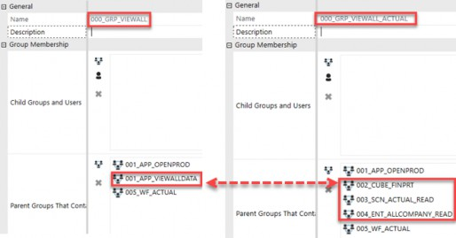
Figure 4.6
Common Roles › User Roles
Data Loaders
Another common type of user that a lot of companies have is a user who is responsible for the data load process. This data load process could be to load data from a source system (whether direct connect or via a flat file), such as an ERP or another financial system to OneStream, or even using data forms for manual input.
This group of users requires not only write access to the scenario (003) and the entity (004) to which data is being loaded, but will also require access to a specific Workflow Profile (005) where the data is being imported, as well as a specific application role (001).
Let’s start with the Modify Data application role. Similar to what we saw in the prior section for viewing data, there is an out-of-the-box application object role to modify data. We will need to start by creating a security group (001_APP_MODIFYDATA) and attaching this group to the application role object Modify Data, as shown in Figure 4.7.
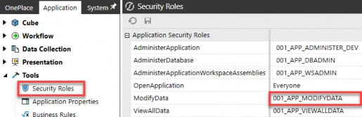
Figure 4.7
However, unlike the out-of-the-box View All Data application role, the Modify Data application role does not supersede the need for further data security around the cube (002), scenario (003), or entity (004). The Modify Data role, while required to allow a person to be able to edit or load OneStream data, is just the first piece needed to grant a user group the ability to load data.
To complete the data load user group, we will need to ensure we have write access to the scenario and entity to which we are loading, as well as the appropriate cube and workflow access. Let’s look at how all these pieces come together in an example data load user group.
We can set up our user group for individuals that will load Actual data called 000_GRP_ACTUALDATALOAD. In that group, we will then nest the necessary pieces to complete this group’s access.
As you can see in Figure 4.8, we have:
a cube (
002_CUBE_FINRPT) security groupwrite access to the Actual scenario (
003_SCN_ACTUAL_WRITE)write access to all entities, assuming this is a central load of data (
004_ENT_ALLCOMPANY_WRITE)access to the import workflow where such data is loaded (
005_WF_CORP_A)execute to the import workflow where such data is loaded (
005_WF_CORP_E)
| Note: The workflow execution is what allows a data loader to execute the import, validate, and load steps for that Workflow Profile. |
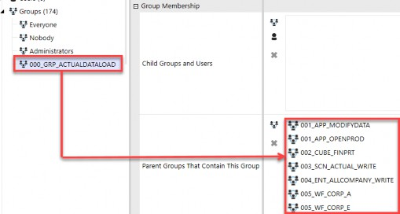
Figure 4.8
If any one of these elements is missing from a data load 000 user group, that user will not be able to import or manually adjust data. It is therefore important to understand that in addition to the out-of-the-box Modify Data role (001_APP_MODIFYDATA), the user will additionally need cube (002), scenario write (003), entity write (004), and appropriate workflow access and execution rights (005) to load data. This is again with the caveat that if any of those objects is set to Everyone, then it negates the need for that access (e.g., if cube access is set to Everyone, then no 002 group is required).
In this section, we covered a basic security group for data loaders and did not touch on the more in-depth data load topics of updating mappings or maintaining metadata. Those topics will be covered in Chapter 5, where we take a deeper dive into all application security elements.
The ability to update mappings and/or data sources is closely tied in with the data load process, but they can be a mutually exclusive sets of users. A company may have people responsible for the overall data load process, but that set of users may not have the ability to add new mappings, data sources, or update metadata. Chapter 5 will go into further detail about other data load considerations like maintaining mappings, data sources, and metadata.
Common Roles › User Roles
Power Users
The next user group we will touch upon is what might be considered power users. For each company, that could mean something slightly different. I think of power users as a group of individuals who fall somewhere between view users and your OneStream administrators – but that is a broad range and could still mean anything!
They are users who are perhaps savvy and responsible for certain aspects of your OneStream application, but are not full OneStream administrators.
By answering some of the design questions we laid out in Chapter 3, you will get a better understanding of what this group may be responsible for.
Let’s imagine that the answers to the two questions below were as follows:
Who will maintain what metadata? – power users, all metadata
Who will maintain what reports? – power users, all reports
There is a lot to unpack with this user group in order to tackle these two items! First, let’s start by creating this user group as 000_GRP_POWERUSER.
Okay, that part was easy.
Next, we will want to think through what out-of-the-box application pages and roles (001) this user group will need vis à vis the questions listed above, and then set up the corresponding 001_APP user groups that will allow the power user group to get to these elements.
Two out-of-the-box application roles facilitate metadata and Cube View maintenance: Manage Metadata and Manage Cube Views with related application pages (Dimension Library Page and Cube Views Page).
Similar to the View All Data application role, these two Manage roles supersede any other Cube View and metadata access. This means users in Manage Metadata will be able to modify all dimensions (entity, scenario, account, flow, and all UDs) regardless of their access to those specific dimensions. Similarly, users in Manage Cube Views will be able to maintain all Cube Views regardless of their rights to a particular Cube View. These application roles and pages are shown in Figure 4.9.
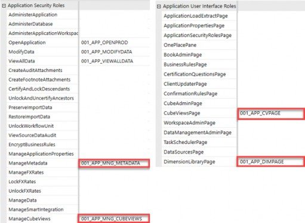
Figure 4.9
If your company takes a simple approach and has a group of power users who maintain all metadata and all Cube Views, then adding these two manage groups to the 000_GRP_POWERUSER group – along with the related application pages – will be sufficient for this power user group to achieve those goals. Therefore, your power user group may appear as shown in Figure 4.10.
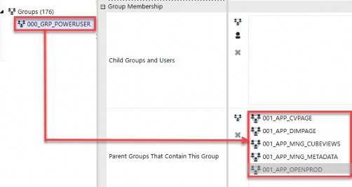
Figure 4.10
The end result for a user placed into this power user group (000_GRP_POWERUSER) will appear as shown in Figure 4.11. A power user with the security in Figure 4.10 will see both the Dimension page and the Cube View page and have full access to edit those pages.
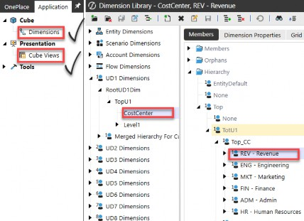
Figure 4.11
Instead, let’s assume the simple approach for managing metadata and Cube Views will not work for your company. Say, for example, that your power users will maintain certain dimensions and Cube Views (e.g., the legal entity and reports for consolidations), but not all dimensions and Cube Views (e.g., the entity and reports used in an FP&A process are excluded).
Then, the simple approach in Figure 4.10 will not work for your company. Here, you do not want to grant your power users the two Manage application roles (Manage Metadata and Manage Cube Views) as they supersede all other security. Instead, you will need to grant your power user group the two pages (Cube Views Page and Dimension Library Page) and then individually layer on additional security groups that grant access to the specific dimensions.
Let’s take the use case that you have power users who will maintain your financial reporting consolidation legal entities (004_ENT_FINPRT_M) and reports (008_CV_CONSOLCUBVIEWS_M), and another power user group that will maintain your management FP&A entities (004_ENT_MGMTRPT_M) and related Cube Views (008_CV_FPACUBEVIEWS_M).
In that case, we will set up two power user groups, and those groups will appear as shown on the right in Figure 4.12. Notice the difference between the simple power user group on the left, where we are able to leverage the two out-of-the-box application roles, versus the more complex setup, where we have to layer on individual access to particular metadata parts and Cube Views instead.
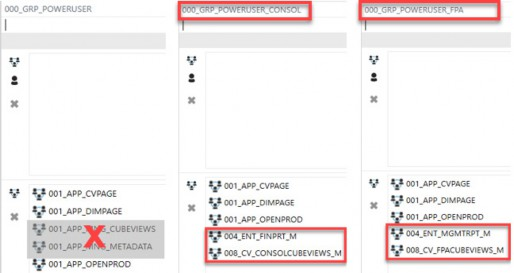
Figure 4.12
The takeaway is that OneStream can accommodate both the simple approach, where one group of users maintains all metadata and Cube Views, and the more complex approach, where such maintenance is limited to specific entities and specific Cube Views.
The important thing in all of these common user group examples is asking the right questions upfront to determine how simple or complex you need to go during the build process.
In general, and as mentioned previously, it is always easier to start simpler or more broadly with your security and layer on additional elements as needs arise. But conversely, if you know upfront that you will have different user groups responsible for different aspects of your application, and that you will need a more complex security model, the less reworking and turning back you will have down the road.
Common Roles › User Roles
Admin Users
The last group of users I want to touch upon in this chapter, but perhaps the most important, are a company’s admin users. When we talk about administrators, these are the people who can sit across different groups of users with varying roles in an organization.
In the case of a simple company, administrators may be a small group of individuals who will have full access to everything OneStream-related within an environment. This group of individuals has full rights to set up users, assign security, and maintain all aspects of a company’s OneStream environment. They are individuals who are trained and have a good understanding of administering OneStream. These folks are typically called your OneStream administrators.
Other companies, especially larger organizations or those more tightly controlled, may have other groups of administrators – such as finance admins – who are responsible for maintaining a single application but do not oversee security or other applications. Or, in the case of companies that have only one environment with both a development app and a production app, you may have groups of admins, some of whom have access to the production app and others who may only have access to the development app.
Another common group of admins is what could be called IT admins. These are the people who are responsible for overall security, adding users, and assigning groups to users, but are not knowledgeable in OneStream application administration itself.
So, the question becomes, how do you satisfy these various levels of OneStream administrators? The answer – as you might expect – starts back at the questions you ask during the design phase. Asking the right questions around what these various admins can or cannot do will help determine how simple or complex your approach will need to be.
As we learned in Chapter 1, there is a native OneStream Administrators security group in every customer environment. Anyone placed in this group will be able to see and do everything in the environment and administer all applications in that environment.
If your company has a small user base or favors simplicity over complexity, it may be enough to use the native Administrators security group and add a handful of individuals into this group whom you deem your OneStream admins. These are individuals who are trained in OneStream and know how to handle all aspects of your OneStream administration.
Adding users to this group is quick and easy. Any users who fall into this category will be added to the Child Groups and Users box of the native Administrators security group, as per Figure 4.13. Typically, no Parent Groups That Contain This Group are needed in the second box because, again, by nature, this group has full rights over all applications and elements within the environment.
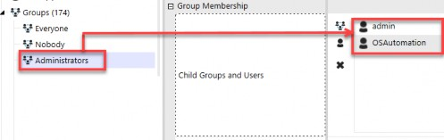
Figure 4.13
If you take this simple approach and use the native Administrators group, then you are assuming some level of risk – no matter how small – that individuals in this group have unlimited access to the environment and applications. Perhaps your organization is willing to assume that risk and will mitigate that risk by monitoring application audit and security reports (discussed in Chapter 8).
However, if your company desires different subsets of admins with varying levels of access, then the simple approach (i.e., only using the native Administrators group) will not work for you.
Fortunately, there are some out-of-the-box application and system security roles that can suit your company’s needs. We will discuss these next.
Let’s start with a group of users you may call finance admins or local admins. You want to grant them access to a particular application, but not necessarily all applications within an environment (e.g., access to a development app but not access to administer a production app). The Administer Application security role can satisfy this population of users.
How is this role different from the native Administrators group? Good question! The Administer Application role will grant users access to a specific application. These admins will be able to make updates and have admin rights over that application, but they will not automatically have access to other applications in that same environment or the System tab.
The Administer Application role is useful when you have multiple applications within one environment and you want to grant sets of user access to one application (e.g., development) but not access to administer other applications (e.g., production). This role does come with limitations, however.
Because this role does not include the System tab, these admins will not automatically have the rights to view things like the error log or set up new security groups that they wish to apply within the application. While there are limitations across the environment for this role, it is still a useful way to grant a set of users localized admin rights quickly.
You will want to set up an application role group (001_APP_ADMINISTER_DEV) and attach that role to this out-of-the-box application security role:
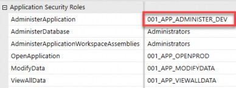
Figure 4.14
Then, set up a user group (000_GRP_ADMIN_DEV) with parent rights over this application role so you can place individuals in the Child Groups and Users box (see Figure 4.15) to leverage this out-of-the-box Administer Application role.
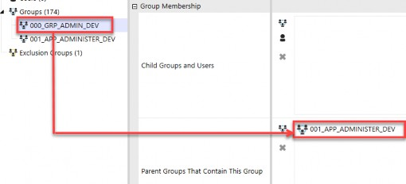
Figure 4.15
Next, let’s assume you have a group of users who will be IT admins and whom you want to grant the ability to add users and assign groups to users, but not do anything else specific within individual applications. There are a couple of out-of-the-box system security roles intended for this purpose, as per Figure 4.16.
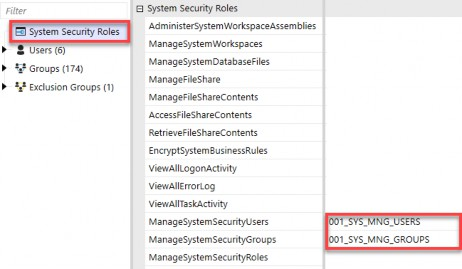
Figure 4.16
The Manage System Security Users and Manage System Security Groups roles can be found under the System Security Roles page on the System tab. By utilizing these two security roles and combining them in a user security group (000_GRP_IT_ADMIN), you can place individuals in the Child Groups and Users box.
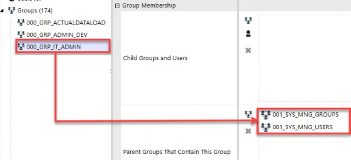
Figure 4.17
Where you go from these three examples, and how much access you grant beyond these examples, is ultimately up to your company’s needs. Remember, OneStream security will not limit how much access you grant to various groups of users. The above are just three quick examples of ways to achieve different admin user groups.
It is important to remember – no matter how many varying levels of admin access you wish to grant to different sets of users – that you will always want at least one (in my opinion, at least two!) key user(s) who is part of the native Administrators group. After all, someone needs to have full access to your environment and applications to prevent you from locking yourself out.
And keep in mind that no matter how many individuals you place in the native Administrators group, the native Administrator user ID is also a part of this native user group.
Common Roles › User Roles
Native Users
Now that we have talked about some common user groups and how to set them up, I would be remiss if I did not also talk about some common users that you may want in your environment.
As discussed previously, every customer environment is set up with one Administrator native user from the get-go. This native user ID contains a random, complex password that is stored in OneStream’s encrypted key value in Azure.
OneStream Support uses this ID when you open a support case and grant them permission for troubleshooting or upgrades. This user ID cannot be edited and is inherently part of the Administrators native use group.
Many companies may have tasks they want to schedule to run overnight or in an automated fashion using OneStream’s Task Scheduler. While you could do so using this native Administrator user ID, or even under the user ID of a specific named person, I prefer to set up a native system user ID to handle things like this.
The simple reason is that I do not like to mess with the Administrator ID set up in the beginning and used by support. But also, practically, if you set up tasks to run under a specific user, it will appear as if that individual is logged on at all hours of the night, running tasks in OneStream! While this may look good (or bad!?) for their work ethic, it does confuse matters when trying to ascertain what that person was really doing versus what was running on an automated schedule.
Therefore, I prefer to set up a native user ID to handle specific automated tasks. For example, you can create a native user ID called OS Automation. You can grant this specific user access to run various tasks overnight, such as data loads, consolidations, etc.
The benefit of setting up a native user for this purpose is that your OneStream administrators can control the password and access of this user. And anyone reviewing task activity logs will be able to easily spot tasks that individual users ran versus tasks that were scheduled to run automatically.
Another similar use case may be a native user ID that is used to run exports to another tool, such as Power BI. In this case, you may want to set up a native user ID called OS Export, for which your OneStream administrators can control the access and password. Again, it will be apparent in task activity logs what this user ID is running.
Another, although limited use case for setting up native IDs is during the build and testing phases. Security, even if simple, still needs to be tested before a UAT, parallel, or go-live. As a consultant or administrator, any time you set up new security or make changes to existing security, you will want to test that it has the intended access before placing users into that security group.
By setting up a native user ID such as Test_PowerUser or Test_ViewUser and putting that user into the new or changed security groups, you can then log in as that user and validate the security changes.
In Chapter 8, we will go into more detail about some easy ways to test security, but just know that the most efficient way to test security is to set up temporary native user IDs, place those users in 000 groups, and then log in as those users to confirm results. These native user IDs can be removed before a go-live, or temporarily added to test a security change and then removed.
It is important to understand that native IDs do count against your user license totals, so while they are useful to set up for various purposes, you will want to be mindful of how many of them you set up, and periodically review the list of native IDs to ensure compliance. And lastly, as we learned in Chapter 2, the ability to allow native authentication is a toggle setting of True/False in the Application Server Configuration Settings.
Now that we have a solid foundation in design considerations, common use cases and roles, and example naming conventions, let’s dive all the way into the application security layer in detail in Chapter 5, followed by the security layer in Chapter 6. The next two chapters will build upon this foundation and go through an exhaustive list of ways in which you can secure your OneStream applications and environments.
Buckle up, as we are going to go deep!